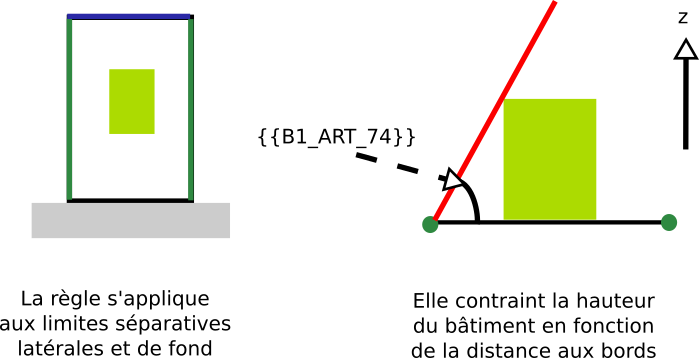

IAUIDF-004 - Contrainte de prospect par rapport aux limites séparatives
Modèle de phrase
La hauteur doit être inférieure à fois la distance aux limites séparatives latérales et de fond de la parcelle.
Paramètres
B1_ART_74
Distance minimale des constructions par rapport aux limites séparatives relative à la hauteur du bâtiment.
- 1 : Retrait de la valeur de la hauteur, H
- 2 : Retrait de la moitié de la valeur de hauteur, H / 2
Explications
représente la pente du plan sous lequel le bâtiment doit se trouver.

Implémentation
La vérification de la distance s'effectue dans la classe PredicateIAUIDF. Si le bâtiment doit être collé sur un des bords de la parcelle (cf RENNES-003.md), alors la limite à laquel le bâtiment est collé n'est pas prise en compte.